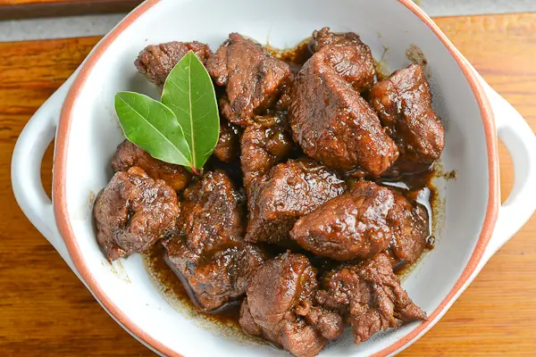

This is filipino dish. This is a Chicken adobo
chicken adobo cooked with soy sauce and vinger and condiments.

Ingredients
- Chicken
- Soy sauce
- Vinegar
- Black Pepper
- Onion
- Garlic
- Bay leaf
Procedure
- Heat oil in pan and sauté garlic and onions. Then add chicken to the
pan and sear on all sides, until you have a little browning in the chicken skin.
- Pour in vinegar, soy sauce and water. Add bay leaves, pepper and Knorr Chicken Cubes.
Bring to a boil over high heat then reduce heat to simmer, but do not cover the pan.
Continue to simmer for 10 mins.
- Remove chicken pieces from sauce and fry in another pan until nicely browned.
- Put back fried chicken pieces into sauce. Add sugar and let simmer again for another
10 minutes or until sauce has thickened. Serve warm.
Back to home page